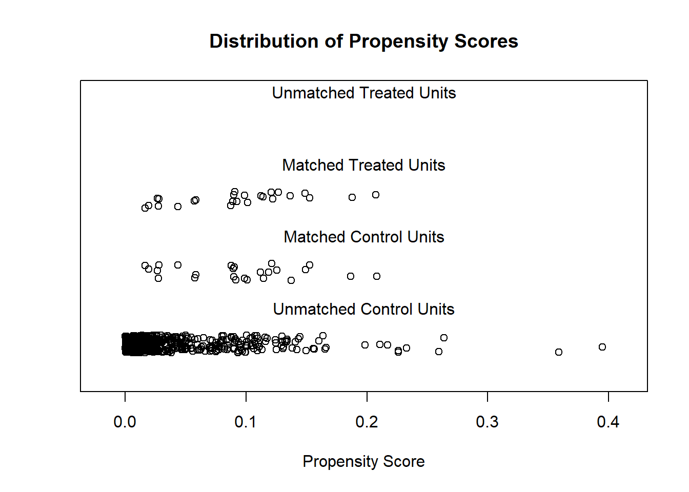
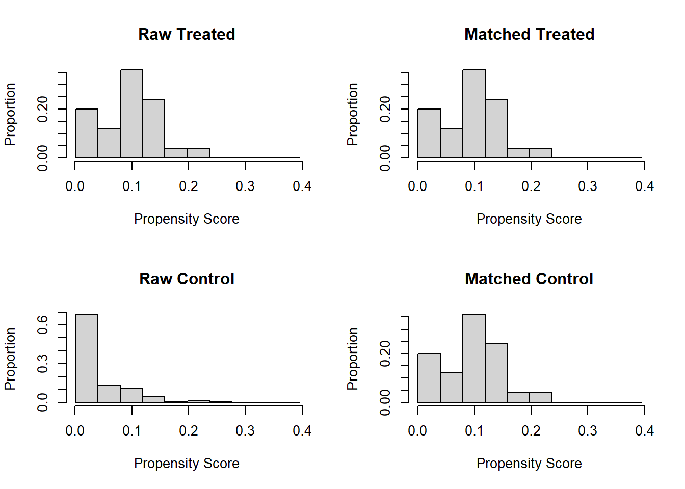

library(MatchIt)Warning: package 'MatchIt' was built under R version 4.1.3Om precies het effect van een aanpak of politieke keuze vast te stellen is een ingewikkelde kwestie. Toch is er dat soort onderzoek nodig om de keuze voor programma’s te legitimeren. Tegenwoordig is er een heel spectrum van technieken om de impact van programma’s vast te stellen. Hier stellen we zo’n matchingsmethode voor (PSM) die goed gebruikt kan worden in verschillende soorten impactstudies en laten we zien hoe deze uitgevoerd kan worden.
Harrie Jonkman
May 28, 2018
Om precies het effect van een aanpak of politieke keuze vast te stellen is een ingewikkelde kwestie. Toch is er dat soort onderzoek nodig om de keuze voor programma’s te legitimeren. Tegenwoordig is er een heel spectrum van technieken om de impact van programma’s vast te stellen. Dit zijn technieken die kunnen worden gebruikt binnen hele verschillende soorten impactstudies. Het is goed daar kennis van te nemen, zeker nu steeds meer mogelijk is omdat er meer data beschikbaar zijn waarop deze evaluaties gebaseerd kunnen worden. Impactstudies worden uitgevoerd om vast te stellen of programma’s de effecten opleveren die ze nastreven, om te begrijpen of en waarom deze programma’s werken, om vast te stellen in hoeverre veranderingen zijn toe te schrijven aan de inzet van het programma en ook om vast te stellen of de gelden op een goede manier worden besteed. Op dit terrein is er natuurlijk een enorme hoeveelheid literatuur en enkele uitgaven geven ons hiervan een goed en up-to-date overzicht1. Experimentele studies kunnen natuurlijk goede impactstudies zijn, met sterke punten en beperkingen. Maar er zijn ook aanvullende methodes die in quasi-experimentele of observationele studies kunnen worden toegepast. Zo zijn er panel datamethodes die gebruikt kunnen worden, regressie discontinu?teit methodes en instrumentele variabelen methodes. Daarnaast zijn er verschillende matchingsmethodes die in impactstudies worden gebruikt. Hier stellen we zo’n matchingsmethode voor die goed gebruikt kan worden in verschillende soorten impactstudies en laten we zien hoe deze uitgevoerd kan worden.
Propensity Score Matching is een statische techniek waarin een individu (of andere eenheid) die behandeld wordt of die ergens aan meedoet, wordt gematcht met een of meer respondenten uit de controlegroep op basis van de propensity score. Deze matchingstechniek versterkt causale argumenten in quasi-experimentele en observationele studies omdat ze selectie-bias reduceert. In dit artikel concentreren we ons op hoe we propensity score matching uitvoeren via een voorbeeld uit het onderwijsveld. Het doel van dit artikel is om informatie te geven zodat het gebruikt kan worden door onderzoekers en mensen die evaluatiestudies uitvoeren2 3.
Propensity score matching is een statistische techniek waarin een geval uit de behandelgroep wordt gematcht met een of meer gevallen uit de controlegroep gebaseerd op ieders propensity score. Elders zijn er veel uitleg en onderbouwingen te vinden voor propensity score (Adelson, 20134; Holland, 1986 5; Rubin, 2005 6; Rudner & Peyton, 20067; Shadish, Cook, & Campbell, 20028; Stone & Tang, 20139 ). In dit artikel concentreren we ons op de vraag hoe we propensity score matching moeten uitvoeren door een voorbeeld uit het onderwijsveld te geven. In dit document willen we vooral een stap-voor-stap voorbeeld geven van de uitvoering van propensity score matching in R. We gebruiken hierbij het MatchIt-pakket met ‘nearest-neighbor 1-to-1 matching’. Terwijl er andere software is dan R voor het uitvoeren van propensity score matching, hebben we voor R gekozen omdat het open-source software is en omdat het breed gebruikt wordt door data-wetenschappers binnen verschillende disciplines. Het doel van dit artikel is om informatie te verschaffen zodat propensity score matching binnen het bereik komt van onderzoek en evaluatie.
Data van een observationele studie door Falbe (2014) worden hier gebruikt om te illustreren hoe propensity score matching werkt. In die studie gebruikt Falbe algemeen toegankelijke schooldata van verschillende staten om te onderzoeken of een bepaalde interventie een voorspeller was van succes in de resultaten op lezen of rekenen/wiskunde wanneer er voor de schoolgrootte worden gecontrolleerd (tot), percentage studenten van minderheden (min) en het percentage studenten dat een vrije of in prijs gereduceerde lunch ontvangt (dis)10. Voor het voorbeeld hier gebruiken we alleen Falbe’s schooldata van de staat New York. In de New York data set, zijn er 25 stw scholen en 560 niet-stw scholen (stw refereert hier naar een bepaalde interventie). Als matchingsvariabelen koos Falbe schoolgrootte, percentage minderheids studenten en het percentage studenten dat een vrije of een in prijs gereduceerde lunch ontvangt. De reden dat ze voor deze matchings variabelen koos, was dat vorig onderzoek had aangetoond dat deze variabelen samenhingen met academische resultaten. Door op deze variabelen te matchen, kon ze, dat was haar doel, selectie-bias reduceren tussen experimentele (“treated”, bijvoorbeeld stw) en controle groep (“control”, bijvoorbeeld niet-stw-scholen). Let op dat ondanks Falbe in haar studie naar correlaties zocht en niet-experimenteel van opzet was, we hier de termen behandeling (treated) en controle (control) gebruiken omdat deze termen worden gebruikt in het programma en de output van het MatchIt pakket.
R is een gratis toegankelijk statistisch pakket dat via URL van het ‘R Core Team’ (2014) kan worden binnengehaald. Zie de referentie11. Let op de specifieke informatie voor het binnenhalen en het openen van de software. R is beschikbaar voor Windows, Mac OS X en Linux systemen. Dit artikel is op de R versie 3.3.2.
MatchIt is een R-pakket dat R-gebruikers goed in staat stelt om met propensity score matching te werken; specifieke informatie over het MatchIt pakket kan worden gevonden in de artikelen van Ho, Kosoke, King, and Stuart (2007a12, 2007b13, 201114, 201315). Om het MatchIt pakket te gebruiken, moet je dat pakket eerst installeren en laden. Zoals met alle R-pakketten hoef je dat installeren alleen de eerste keer te doen. Bij MatchIt dus ook; echter je moet het pakket wel steeds laden als je de R-software gebruikt. Om een pakket te installeren, open je R en selecteer je het ‘Packages’ -menu. Kies dan: ‘Install Package(s)’. Een pop-up beeld van CRAN Mirror verschijnt. Kies het pakket dat je wilt uit een lijst en klik OK. Een ander beeld (“Packages” genaamd) verschijnt. Ga naar beneden en selecteer MatchIt en klik weer op OK. Het pakket wordt meteen binnengehaald. Als je vervolgens het MatchIt pakket wilt laden, kies dan voor ‘Load Package’ van het dropdown menu onder het ‘Package’-menu in R. Een beeld verschijnt met beschikbare pakketten waar jij jouw pakket uit moet selecteren. Kies uit de lijst voor MatchIt en klik op OK. Het MatchIt pakket wordt nu geladen.
Om propensity score matching uit te voeren heb je een dataset nodig die bestaat uit gevallen die in rijen staan (bv. individuen) en variabelen die in kolommen staan. Je hebt een groepvariabele nodig en een of meer matchingsvariabelen. De groepvariabele is de variabele die specificeert tot welke groep een geval (een individu of een school) behoort (bv. experimenteel of controle). De matchingsvariabelen zijn de variabelen waar je de groepen op wilt gelijk zetten. In de dataset van Falbe (2014) is bijvoorbeeld de stw-variabele de groepvariabele. Deze variabele geeft aan of een bepaald geval (een school hier) de interventie heeft ontvangen (1) of niet (0). De andere variabelen tot (schoolgrootte), min (percentage studenten met een andere etnische achtergrond in de school) en dis (percentage van de studenten dat een vrije of in prijs gereduceerde lunch ontvangt) zijn de matchingsvariabelen. De dataset die we hiervoor gebruiken kan worden binnengehaald via Randolph (2014a)16. In jouw eigen datasets moet je er wel zeker van zijn dat er geen missende data zijn want dan kan R de analyse niet uitvoeren. Ofschoon er verschillende functies zijn om Excel, SPSS of andere dataformaten in R te importeren, vinden wij het het makkelijkste om de data op te slaan als een .csv-file voordat je de data in R binnehaalt. Als je de file in Excel hebt opgeslagen, heb je de optie om het als een .csv-file op te slaan. Als je de file opslaat, let dan wel op waar deze wordt opgeslagen. Nu moet je de lokatie van jouw file die tussen haakjes staat in de eerste regel van de R-code (zie hieronder) aan jouw lokatie aanpassen. Let op dat in de eerste regel voorwaartste schuine streepjes staan eerder dan terugwaartse om jouw file lokatie te specificeren. Het voorbeeld hieronder is een filelokatie in Windows, waar de data staan in de file die newyork.csv heet in de folder R/PSM genaamd op de C-schijf. De eerste regel leest de data van jouw computer en hernoemt het als mydata. De tweede regel maakt deze data beschikbaar voor deze R sessie. De derde regel van de code hieronder print de variabelenamen en de eerste gevallen in de dataset. We doen dat alleen om de data te controleren en te begrijpen waar elke kolom voorstaat.
school tot min dis stw
1 SKANEATELES MIDDLE SCHOOL 380 0.03 0.00 0
2 MARCUS WHITMAN MIDDLE SCHOOL 276 0.04 0.00 0
3 BLIND BROOK-RYE MIDDLE SCHOOL 376 0.09 0.00 0
4 BRONXVILLE MIDDLE SCHOOL 404 0.11 0.00 0
5 BRIARCLIFF MIDDLE SCHOOL 374 0.12 0.00 0
6 RYE MIDDLE SCHOOL 754 0.17 0.00 0
7 EASTCHESTER MIDDLE SCHOOL 704 0.26 0.00 0
8 SCARSDALE MIDDLE SCHOOL 1172 0.27 0.00 0
9 EDGEMONT JUNIOR-SENIOR HIGH SCHOOL 920 0.42 0.00 0
10 SEVEN BRIDGES MIDDLE SCHOOL 619 0.17 0.01 0Na de code zie je hierboven de resultaten staan van wat de R-code oplevert. Het laat de eerste tien gevallen in de dataset zien en wat de kolommen inhouden. Het laat zien dat de kolommen van links naar rechts de gevalnummer zijn (een uniek id-nummer voor elke school), school (de naam van elke school), tot (het totale aantal studenten in op die school), min (het percentage van minderheidsstudenten op de school), dis (precentage studenten dat een vrije of in prijs gereduceerde lunch) en stw (of de school de interventie ontvangt met een (1) Scholen die deze wel of (0) niet ontvangen).
De volgende stap is nodig om te laten zien hoe de matching wordt uitgevoerd en de resultaten vervolgens kunnen worden geevalueerd. De eerste regel in de code die hieronder te zien is, voert de matching uit en de groepsvariabele is stw en de variabelen waarop wordt gematcht zijn tot, min en dis. Je moet deze variabelen in de code eventueel later vervangen door de variabelenamen die in jouw eigen dataset voorkomen. In de methode hieronder wordt de ‘nearest neighbor-methode’ gebruikt. Het ratio-commanda geeft aan dat er een ??n op ??n matching wordt toegepast en dat betekent dat elk geval van de behandeling wordt gematcht aan een geval uit de controlegroep. Het getal waarin gematcht wordt kan toenemen; meestal wordt hier een getal tussen 1 en 5 gebruikt.
Hieronder zie je de code om de PSM uit te voeren en de resultaten ervan.
Call:
matchit(formula = stw ~ tot + min + dis, data = mydata, method = "nearest",
ratio = 1)
Summary of Balance for All Data:
Means Treated Means Control Std. Mean Diff. Var. Ratio eCDF Mean
distance 0.0943 0.0405 1.0459 1.0425 0.3159
tot 832.6400 568.8998 0.9037 0.7650 0.2434
min 0.1664 0.2767 -0.9140 0.1605 0.1115
dis 0.1840 0.4079 -1.5435 0.3368 0.2283
eCDF Max
distance 0.5185
tot 0.4996
min 0.1896
dis 0.4744
Summary of Balance for Matched Data:
Means Treated Means Control Std. Mean Diff. Var. Ratio eCDF Mean
distance 0.0943 0.0942 0.0019 1.0016 0.0017
tot 832.6400 830.6400 0.0069 0.8546 0.0902
min 0.1664 0.1772 -0.0895 0.8234 0.0277
dis 0.1840 0.1808 0.0221 1.1359 0.0264
eCDF Max Std. Pair Dist.
distance 0.04 0.0098
tot 0.24 1.1790
min 0.12 1.2233
dis 0.12 0.6177
Sample Sizes:
Control Treated
All 559 25
Matched 25 25
Unmatched 534 0
Discarded 0 0
[1] "To identify the units, use first mouse button; to stop, use second."integer(0)
Er kunnen ook andere methodes gebruikt worden; een korte beschrijving hiervan vind je in de lijst hieronder. We moedigen MatchIt-gebruikers aan om verschillende methodes te gebruiken en te zien welke methode het beste werkt voor een bepaalde dataset. In dit geval probeerden we alle matchingmethodes die er tegenwoordig gebruikt kunnen worden in MatchIt en kozen voor de ’nearest neighbor-methode’omdat dit leidde tot de laagste gemiddelde verschillen tussen groepen. Sommmige andere methodes zijn
- Exact Matching - Elke eenheid uit de treated groep heeft precies dezelfde waarden aan die uit de controle groep op elke covariaat. Als er veel covariaten zijn en/of covariaten die een groot aantal waarden aan kunnen nemen, dan kan het zijn dat Exact Matching niet mogelijk is (method = “exact”).
- Subclassificatie - Deze techniek breekt de data als het ware in enkele subklassen zodat de verdelingen van de covariaten hetzelfde zijn binnen iedere subklasse (method = “subclass”).
- Nearest Neighbor - Deze techniek matcht een treated-eenheid aan die van de controlegroep in termen van afstand die in een logit-waarde wordt uitgedrukt (method = “nearest”).
- Optimal Matching - Deze techniek richt zich op het minimaliseren van de gemiddelde absolute afstand over alle gematchte paren (method = “optimal”). Deze methode van matching vraagt een bepaald pakket.
- Genetic Matching - dit gebruikt een intensief genetisch zoekalgoritme om de treatment aan de controle eenheid te koppelen (method = “genetic”). - Coarsened Exact Matching techniek matcht op een covariaat terwijl de balans op de andere covariaten wordt vastgehouden. Het werkt “goed voor multicategoriale behandelingen, wanneer er met blokken in experimentele designs wordt gewerkt en bij het evalueren van extreme counterfactuals” (Ho, Kosuke, King, & Stuart, 2011, p.1217) (method = “cem”).
Zie documentatie over MatchIt voor verdere detailt over de matchingsprocedure zoals hierboven is uitgelegd. (Ho, Kosuke, King, & Stewart, 2007a18, 2007b19, 201120, 201321).
De resultaten van de matching worden opgeslagen in een variabele die heet m.out. De tweede regel geeft een samenvatting van de matching. De derde en vierde regel produceren plots en histogrammen. De resultaten laten zien dat de matching bijzonder goed werkt voor deze dataset. In de samenvatting lezen we dat voor de matching het gemiddel aantal studenten (tot) in de treatment groep van scholen 263.74 studenten minder was dan in de controle (de niet-stw) scholen. De treated-scholen had 11% minder minderheidsstudenten (min) en 22% procent minder studenten in armoede (dis) dan in de controlescholen. Na de matching echter zijn deze verschillen dramatisch teruggebracht zoals we in de samenvatting kunnen lezen. Het gemiddelde verschil in aantallen studenten tussen de treated en de controlescholen is tot 2 teruggebracht; het was 263 voor de matching. Het percentage verschil in minderheidsstudenten tussen de treated en controle scholen is nog slechts 1%; het was 11% voor de matching. Tenslotte, het gemiddelde verschil tussen treated en controle scholen in termen van percentage achterstandsstudenten is tot 3/10 procent teruggebracht; het was 22% voor de matching.
Samengevat, de treated en controle scholen zijn na de matching vrijwel hetzelfde geworden wat betreft het aantal studenten, het percentage minderheidsstudenten en het percentage studenten dat een vrij en in prijs verlaagde lunch ontvangt. Voor de matching waren de treated scholen gemiddeld groter, hadden ze minder minderheidsstudenten en minder achterstandsstudenten dan de controle scholen. De kolommen rechts in de samenvatting laten de mediaan, het gemiddelde en het maximum quartiel zien tussen de treated en de controledata; kleinere QQ-waarden laten een betere matching zien. Het valt op dat de QQ-waarden na matching kleiner zijn dan voor de matching.
Met de derde en vierde regel van de code worden jitterplots en histogrammen gemaakt om de kwaliteit van de matching aan te tonen. In een jitterplot representeert elke cirkel een propensityscore van een geval. Bovenaan zie je dat er geen niet-gematchte treatment eenheden zijn. De middelste grafieken laten de sterke match zien tussen de gematchte treatment en controleeenheden. Onderaan zien je de niet gematchte controleeenheden die in de analyses verder niet gebruikt zullen worden.
Daaronder zie je de histogrammen voor en na de matching. De histogrammen voor de matching, links, verschillen in sterke mate. De histogrammen na de matching, rechts, zijn voor een groot deel hetzelfde. Samengevat kunnen we stellen dat zowel de numerieke als de visuele data laten zien dat de matching succesvol was.
Als de matching een keer is afgerond, wil je een dataset hebben die bestaat uit enkel gematchte gevallen waarmee je de statistische analyses kunt doen die je voor ogen hebt. Hieronder zie je de code staan waarmee je in de eerste regel een R-dataset maakt met gematchte behandel en controlegevallen (bijvoorbeeld hier zitten de meer dan 500 controlgevallen niet meer in die niet zijn gematcht.) De tweede regel zorgt er voor dat de gematchte data in een .csv-file worden omgezet die verder in R kunnen worden geanalyseerd of eenvoudig kunnen worden omgezet naar een ander statistisch software-pakket; in dit geval is de output dataset opgeslagen als een file die newyork_nearest1 wordt genoemd in een specifieke folder (R/PSM in dit geval) op de C-schijf. (De dataset voor de New York data kan worden gedownload van Randolph (2014b))22.
Wat vervolgens de analyse betreft was Falbe (2014) ge?nteresseerd in de vraag of stw-scholen het beter doen dan niet-stw schools ten aanzien van academische resultaten23. Om die analyse uit te voeren, voegde ze de lees-en rekenscores toe aan de gematchte dataset en voorspelde zo de academische resultaten op basis van de volgende variabelen: of een school een stw-school was of niet, de schoolgrootte, het percentage minderheidstudenten in een school en het percentage studenten dat een vrije of in prijs verlaagde lunche ontvangt. Het blijkt dat matching in dit geval belangrijk was. Zonder matching hadden stw-scholen statistisch gezien betere resultaten dan wanneer ze niet gematcht waren. Fable vond geen statistisch gezien significant verschil tussen stw niet stw-scholen op de academische resultaten. Zonder propensity score matching zou Falbe een hele andere conclusie hebben getrokken ten aanzien van de effectiviteit van de interventie, die dan eigenlijk het resultaat is van selectie-bias. Het is duidelijk dat propensity score matching een bruikbaar gereedschap is om selectie-bias te reduceren en causale conclusies te trekken. We hopen dat door deze stap-voor-stap gids een brede groep onderzoekers en evaluatiemedewerkers propensity score matching aan hun repertoire van data analysetechnieken kan toevoegen en deze techniek in hun werk kan gebruiken.
Adelson, J. L. (2013). Educational research with real data: Reducing selection bias with propensity score analysis. Practical Assessment Research & Evaluation, 18(15). Retrieved from http://pareonline.net/getvn.asp?v=18&n=15
Falbe, K. (2014). The relationship between Schools to Watch ? designation and ac study of Colorado, New York, Ohio, and Virginia (Doctoral dissertation). Available from Proquest Dissertations and Theses database. (UMI No. 3581272)
Gertler, P.J., Martinez, S., Prenard, P., Rawlings, L.B. & Vermeersch, C.M. (2011). Impact Evaluation in Practice. Washington D.C.: The World Bank
Ho, D., Kosuke, I., King, G., & Stuart, E. (2007a). MatchIt: Nonparametric preprocessing for parametric causal inference. Political Analysis, 15(3), 199
Ho, D., Kosuke, I., King, G., & Stuart, E. (2007b). Matching as nonparametric preprocessing for reducing model dependence in parametric causal inference. Journal of Statistical Software. Retrieved from http://gking.harvard.edu/matchit/
Ho, D., Kosuke, I. King, G., & Stuart, E. (2011). MatchIt: Nonparametric preprocessing inference [software documentation]. Retrieved from http://gking.harvard.edu/matchit
Ho, D., Kosuke, I., King, G., & Stuart, E. (2013). MatchIt: Nonparametric preprocessing for parametric causal inference [software]. Retrived from http://gking.harvard.edu/matchit
Holland, P. W. (1986). Statistics and causal inference. Journal of the American Statistical Association, 81(396), 945-960.
Khandker, S.R., Koolwal, G.B. & Samad, H.A. (2010). Handbook on Impactevaluation. Quantative Methods and Practices. Washington D.C: The World Bank.
Murnane, R.J. & Willet, J.B.(2011). Methods Matter. Improving Causal Inference in Educational and Social Science Research. New York: Oxford University.
Randolph, J. J. (2014a). New York educational data set example before matching. Retrieved from http://justusrandolph.net/psm/newyork.csv
Randolph, J. J. (2014b). New York educational data set example after matching. Retrieved from http://justusrandolph.net/psm/newyork_nearest100.c sv
R Core Team (2014). R: A language and environment for statistical computing. (3.0.3 ) [Computer software]. Vienna, Austria: Foundation for Statistical Computing. Retrieved from http://www.R-project.org/.
Rubin D. B. (2005). Causal inference using potential outcomes: Design, modeling, decisions. Journal of the American Statistical Association, 100(496), 322-331.
Rudner, L. M., & Peyton, J. (2006). Consider propensity scores to compare treatments. Practical Assessment Research & Evaluation, 11(9). Retrieved from: http://pareonline.net/getvn.asp?v=11&n=9
Shadish, W. R., Cook, T. D., & Campbell, D. T. (2002). Experimental and quasi-experimental designs for generalized causal inference. Boston, MA: Houghton Mifflin.
Stone, C. A. & Tang, Y. (2013). Comparing propensity score methods in balancing covariates and recovering impact in small sample educational program evaluations.
Note: A previous version of this paper was delivered at the 2014 annual meeting of Mercer University Atlanta Research Conference, Atlanta, GA.
Randolph, Justus J., Falbe, Kristina, Manuel, Austin Kureethara, & Balloun, Joseph L. (2014). A Step-byStep Guide to Propensity Score Matching in R. Practical Assessment, Research & Evaluation, 19(18). Available online: http://pareonline.net/getvn.asp?v=19&n=18
Justus J. Randolph Tift College of Education Mercer University 3001 Mercer University Dr. Atlanta, GA 30341 randolph_jj@mercer.edu
Khandker, S.R., Koolwal, G.B. & Samad, H.A. (2010). Handbook on Impactevaluation. Quantative Methods and Practices. Washington D.C: The World Bank; Gertler, P.J., Martinez, S., Prenard, P., Rawlings, L.B. & Vermeersch, C.M. (2011). Impact Evaluation in Practice. Washington D.C.: The World Bank; Murnane, R.J. & Willet, J.B.(2011). Methods Matter. Improving Causal Inference in Educational and Social Science Research. New York: Oxford University↩︎
Alles gebaseerd op: Randolph, Justus J., Falbe, Kristina, Manuel, Austin Kureethara, & Balloun, Joseph L. (2014). A Step-byStep Guide to Propensity Score Matching in R. Practical Assessment, Research & Evaluation, 19(18). Available online: http://pareonline.net/getvn.asp?v=19&n=18 ↩︎
Het correspondentieadres van hem is: Justus J. Randolph Tift College of Education Mercer University 3001 Mercer University Dr. Atlanta, GA 30341 randolph_jj@mercer.edu↩︎
Educational research with real data: Reducing selection bias with propensity score analysis. Practical Assessment Research & Evaluation, 18(15). Retrieved from http://pareonline.net/getvn.asp?v=18&n=15 ↩︎
Holland, P. W. (1986). Statistics and causal inference. Journal of the American Statistical Association, 81(396), 945-960. ↩︎
Rubin D. B. (2005). Causal inference using potential outcomes: Design, modeling, decisions. Journal of the American Statistical Association, 100(496), 322-331. ↩︎
Rudner, L. M., & Peyton, J. (2006). Consider propensity scores to compare treatments. Practical Assessment Research & Evaluation, 11(9). Retrieved from: http://pareonline.net/getvn.asp?v=11&n=9 ↩︎
Shadish, W. R., Cook, T. D., & Campbell, D. T. (2002). Experimental and quasi-experimental designs for generalized causal inference. Boston, MA: Houghton Mifflin. ↩︎
Stone, C. A. & Tang, Y. (2013). Comparing propensity score methods in balancing covariates and recovering impact in small sample educational program evaluations. ↩︎
Falbe, K. (2014). The relationship between Schools to Watch ? designation and ac study of Colorado, New York, Ohio, and Virginia (Doctoral dissertation). Available from Proquest Dissertations and Theses database. (UMI No. 3581272)↩︎
R Core Team (2014). R: A language and environment for statistical computing. (3.0.3 ) [Computer software]. Vienna, Austria: Foundation for Statistical Computing. Retrieved from http://www.R-project.org/. ↩︎
Ho, D., Kosuke, I., King, G., & Stuart, E. (2007a). MatchIt: Nonparametric preprocessing for parametric causal inference. Political Analysis, 15(3) , 199 ↩︎
Ho, D., Kosuke, I., King, G., & Stuart, E. (2007b). Matching as nonparametric preprocessing for reducing model dependence in parametric causal inference. Journal of Statistical Software. Retrieved from http://gking.harvard.edu/matchit/ ↩︎
Ho, D., Kosuke, I. King, G., & Stuart, E. (2011). MatchIt: Nonparametric preprocessing inference [software documentation]. Retrieved from http://gking.harvard.edu/matchit↩︎
Ho, D., Kosuke, I., King, G., & Stuart, E. (2013). MatchIt: Nonparametric preprocessing for parametric causal inference [software]. Retrived from http://gking.harvard.edu/matchit ↩︎
Randolph, J. J. (2014a). New York educational data set example before matching. Retrieved from http://justusrandolph.net/psm/newyork.csv ↩︎
Ho, D., Kosuke, I. King, G., & Stuart, E. (2011). MatchIt: Nonparametric preprocessing inference [software documentation]. Retrieved from http://gking.harvard.edu/matchit↩︎
Ho, D., Kosuke, I., King, G., & Stuart, E. (2007a). MatchIt: Nonparametric preprocessing for parametric causal inference. Political Analysis, 15(3) , 199 ↩︎
Ho, D., Kosuke, I., King, G., & Stuart, E. (2007b). Matching as nonparametric preprocessing for reducing model dependence in parametric causal inference. Journal of Statistical Software. Retrieved from http://gking.harvard.edu/matchit/ ↩︎
Ho, D., Kosuke, I. King, G., & Stuart, E. (2011). MatchIt: Nonparametric preprocessing inference [software documentation]. Retrieved from http://gking.harvard.edu/matchit↩︎
Ho, D., Kosuke, I., King, G., & Stuart, E. (2013). MatchIt: Nonparametric preprocessing for parametric causal inference [software]. Retrived from http://gking.harvard.edu/matchit ↩︎
Randolph, J. J. (2014b). New York educational data set example after matching. Retrieved from http://justusrandolph.net/psm/newyork_nearest100.csv↩︎
Falbe, K. (2014). The relationship between Schools to Watch ? designation and ac study of Colorado, New York, Ohio, and Virginia (Doctoral dissertation). Available from Proquest Dissertations and Theses database. (UMI No. 3581272). ↩︎